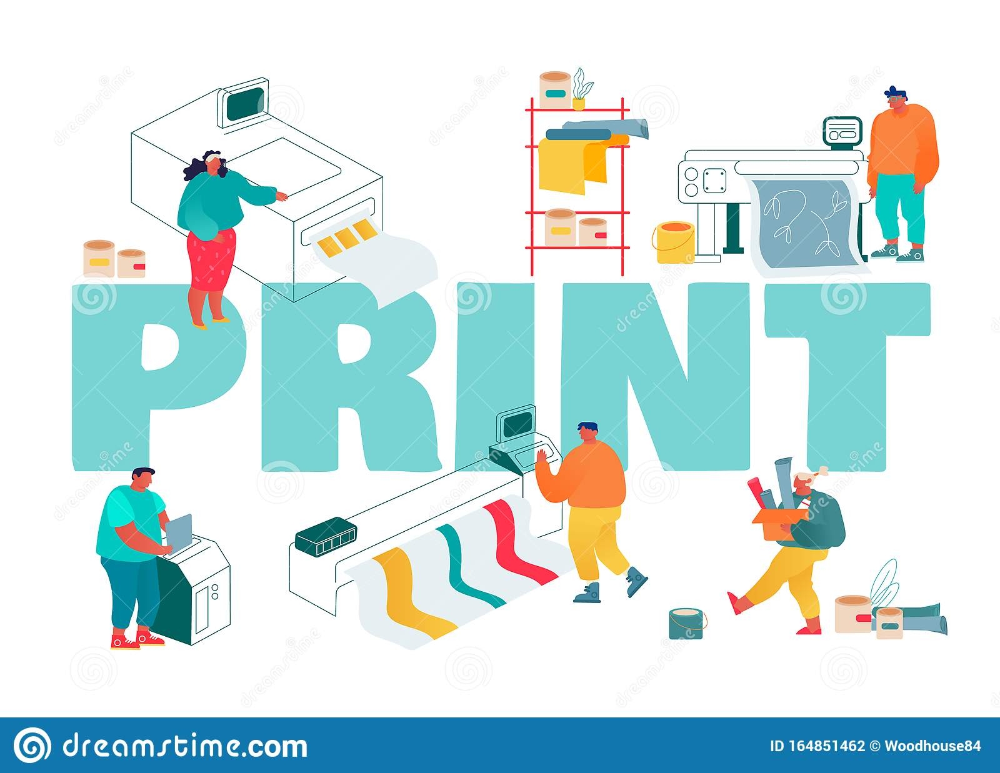
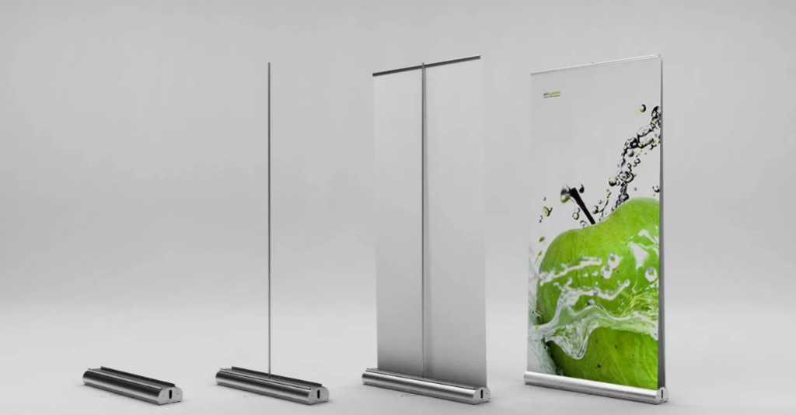
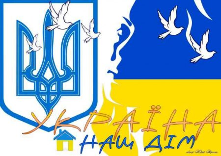

Типографія та поліграфія - яка різниця?
Типографія та поліграфія – це два сумісних значення, але вони не однакові та мають різні задачі. Можна зазначити, що поліграфія - це технічна область, за допомогою якої робляться копії та розмножується друкована продукція. А типографія - це підприємство з виготовлення друкованої продукції.
Візитівка
Візитівка — традиційний носій контактної інформації про особу або організацію.
Виготовляється з паперу, картону або пластику невеликого формату.
Візитівка містить ім'я власника, компанію (зазвичай з логотипом) та контактну інформацію
(адресу, телефон, електронна пошта).
Конструкція Ролл-Ап
Ролл-ап — мобільний рекламний стенд, виготовлений з банерної тканини, який вмонтований в метелаву конструкцію. Задача таких стендів: демонстрація інформації на будь-якому заході, виставках, конференціях в офісі або у торговій залі.
Конструкція Павук
Даний мобільний стенд є хрестоподібною конструкцією (звідси походить назва «X-Banner» або «Павук»), на яку кріпиться рекламне полотно. Для кріплення використовуються люверси, встановлені з обох боків виставкового полотна. Натяг полотна відбувається за рахунок пружинних прутів. Полотно кріпиться на алюмінієві планки спеціального перерізу, що забезпечує рівномірний натяг полотна з рекламою по всьому полю. "Павук" характеризується легкістю зміни полотна, що не вимагає залучення спеціалістів.
Креслення
Плакат
Плакат це один з видів друкованої продукції, який прийнято використовувати в рекламних, інформаційних, агітаційних цілях. Тому, як правило, він має яскравий дизайн, помітну назву або заклик до дії.
